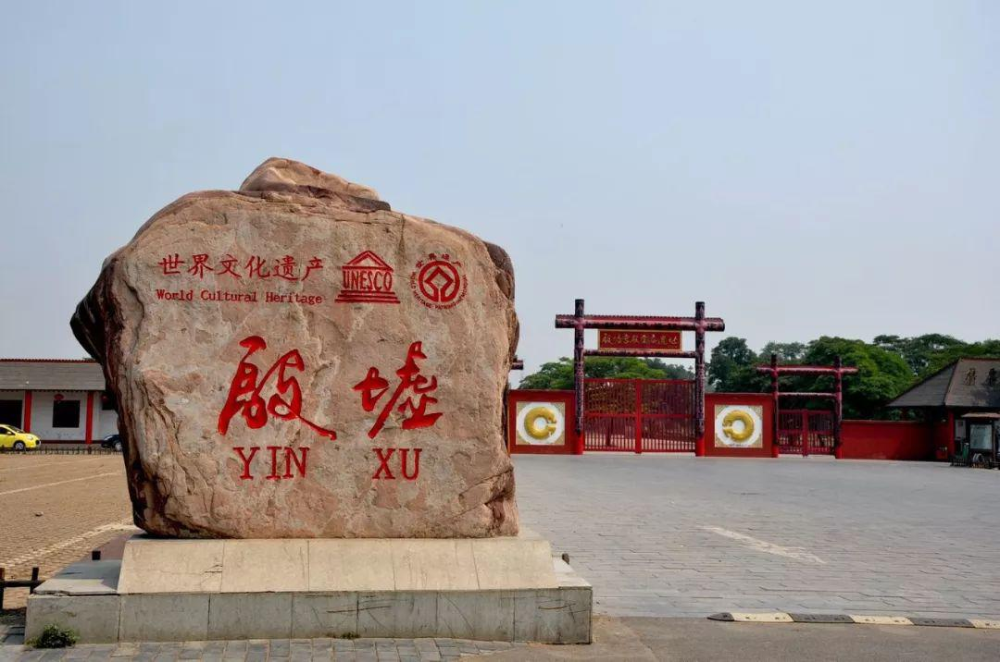
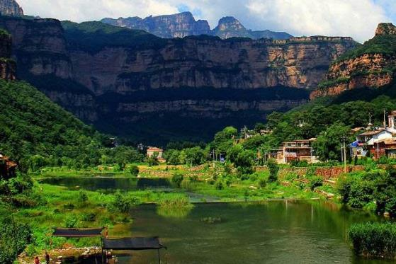
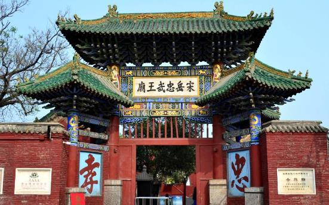
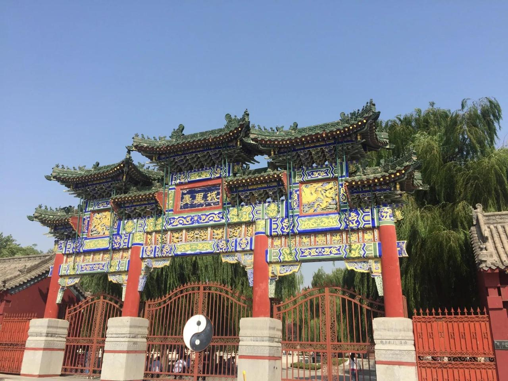

景点介绍
-
太行仙台山
仙台山有着独特的地貌景观，自然风光美不胜收。这里有茂密的原始森林，有“十里画廊”之称的峡谷风光，有神秘奇特的天然溶洞，有清澈不息的山泉，还有充满着历史文化底蕴的古迹。旅行体验丰富多彩，让人流连忘返。
-

殷墟
殷墟是中国商朝晚期的都城遗址，曾在20世纪发掘了甲骨文，从而震惊中外。殷墟出土了大量的建筑遗址、甲骨文、 青铜器等，为研究甲骨文和千年历史提供了珍贵的资料。
-

红旗渠名胜游览区
“人工天河–红旗渠”是人类“改造自然，利用自然”的史无前例的一大杰作；是新中国林州人民勤劳与智慧的结晶， 它不仅是一笔巨大的物质财富，而且是一笔巨大的精神财富。在此工程中，林州人民体现出的“自力更生，艰苦 创业，团结协作，无私奉献”的优良传统美德和感人精神，得到了党和国家领导人充分肯定和赞扬，也受到了世人 的称赞而广为传颂。
-

汤阴岳飞庙
汤阴岳飞故里“宋岳忠武王庙”，原名精忠庙，岳飞庙位于河南省汤阴县城内西南街。始建时间无考，今址是明景泰 元年(1450年)重建。历代曾多次作修葺，增建，至今占地6千4百余平方米，六进院落，房屋建筑100余间。其内含 丰富，殿堂雄伟，碑碣林立。
-

羑里城遗址
羑里城，位于汤阴县城北2公里处，是我国历史上有文字记载的第一座国家监狱，也是风靡全球的《周易》发祥地。 她以博大精深的文化内涵而名扬海内外，“画地为牢”、“文王拘而演周易”的历史典故发生在这里，“逆境发愤”、 “自强不息”的民族精神也源于此地。羑里城是全国重点文物保护单位，国家级旅游景区，是安阳市优秀爱国主义 教育基地。